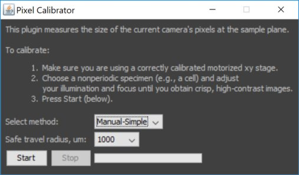

μManager configuration

The Hardware Configuration file is a text file that describes the hardware and hardware settings. Here, we use "virtual" hardware.

The "Help" button links to the selected device's page on the micro-manager website, often providing useful information.

Give the device a name that means something to you and your useres, and set pre-initialization properties (depends on device).

For "Hub" devices you can select here which of its "peripherals" you want to used.

If any of the peripherals has pre-intialization properties, you will asked to set those now.
Congratulations! μManager now knows about your devices.

Assign default roles (and stage directions). You can change the "active" camera/Shutter/Focus stage and autoshutter at any point in time later on.

Some (older) devices will not tell when they are done moving. The "delay" should be set to the longest time it can take for these devices to stop moving.
Give the State Device positions meaningful names. Sometimes you can use the "Read" button to read names from the device itself.

Save and you are done telling μManager which devices are part of your system.
Main window now knows about devices (try snapping an image), but there are no Configuration presets yet.
μManager Configuration Settings
Start creating a Configuration Group by pressing the "Group: +" button.
Name the group, and select properties to be part of the group. When you select only one property, all available settings will automatically become presets."
Change the Camera Mode by clicking on the Preset. Check by snapping an image.
Create another group. Name it "Channel". Select more than 1 property.
This will open the Preset Editor that lets you name a preset (and also change the device properties in the preset).
To add a preset to the Channel group, select th group (by clicking on the row with the Channel group) and clicking the "Preset: +" button.
Set the properties and Preset name as you like them to be. You may want to add a few more presets.
There is one special group, called "System". The preset "Startup" will be set when μManager starts up, and "Shutdown" will be set when it shutds down.
Set the properties of the "Startup" group however you like them.
Create a group "Objective" that lets you choose from the available lenses. We will need this one when defining pixel sizes.
Results of your hard work... Only pixel size definitions are left to be configured.
μManager Pixel Size Definitions
Open the Pixel Size Calibration dialog.
Click "New" to create a new pixel size calibration.
The Pixel Config Editor is a bit complex. First set the name of this new Pixel Configuration.
Then set the Pixel size (which you should measure using a graticule. You can estimate the pixel size using the magnification of the objective and the physical pixel size of the camera).
Select the properties that affect pixel size (the objective, and possible other devices that change magnification).
To know how to move the stage correctly, μManager uses an affine transform. The easiest way to set this up is to press "Calculate" first.
Note the change in numbers of the affine transform.
To get the orientation of the stage with respect to the image right, click "Measure".

Use the "Manual-Simple" method and follow the instructions. The "Automatic" method will determine a better affine transform (and also measure pixel size), but regularly fails.
Note the change in number of the affine transform. Press "OK" to finish defining this pixel calibration.
Success! Create more pixel size calibrations or close this dialog.
Note the indication of pixel size in the &muManager status line.
More?
Configuration guide (written for 1.4)